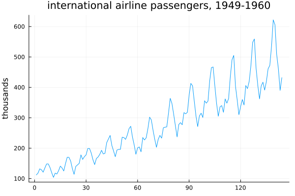
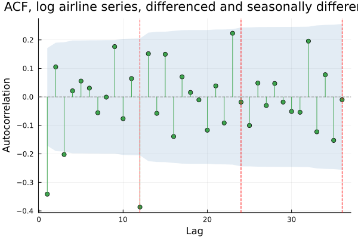
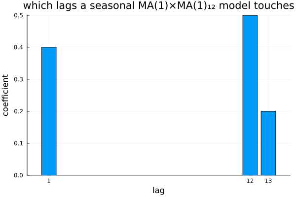
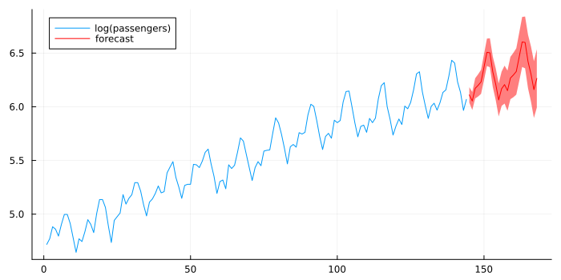
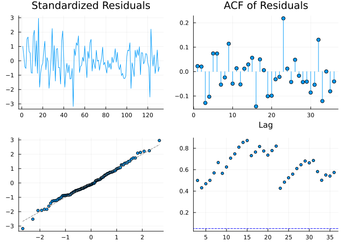
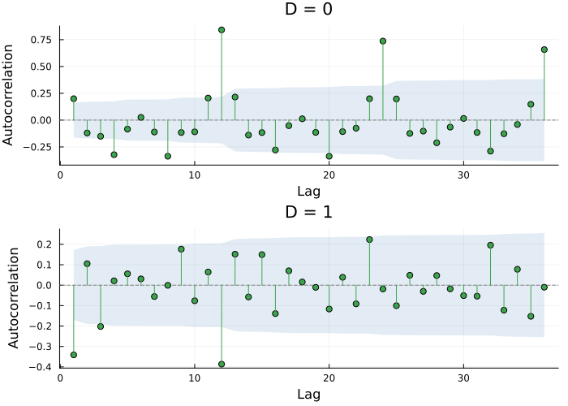
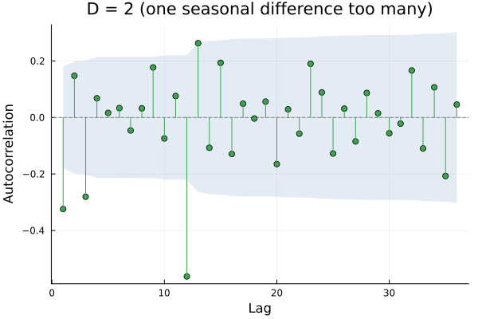
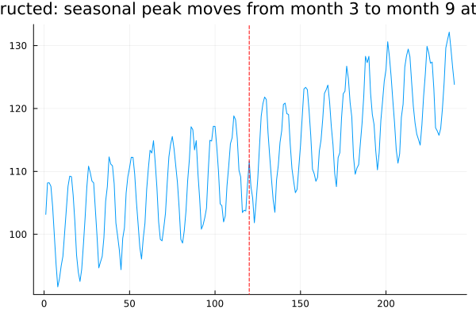
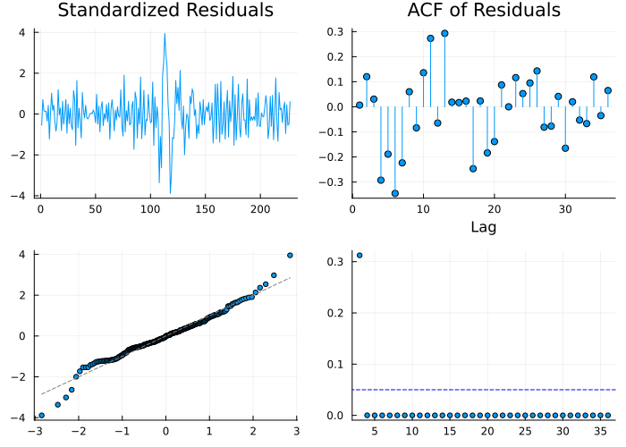
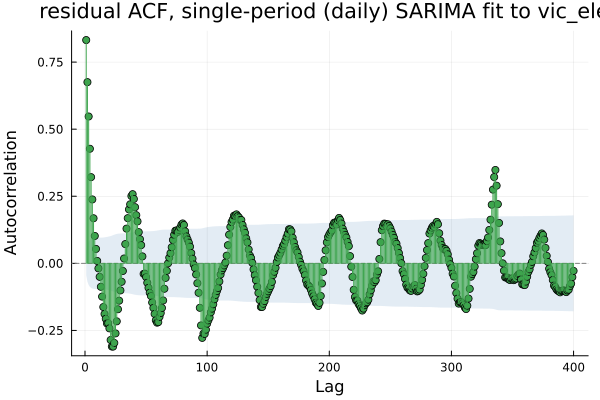

Seasonal ARIMA
The model most people mean when they say "ARIMA," and the one named after the dataset the reader met on page seven.
The model with a dataset named after it
using TSAnalytics, Plots, DelimitedFiles
y = Float64.(readdlm(TSAnalytics.AIR_PASSENGERS, ','; skipstart=1)[:, 2])
plot(y; title="international airline passengers, 1949-1960", legend=false, ylabel="thousands")
Twelve years of monthly international airline passengers. Differenced in Chapter 3, logged in Chapter 7, decomposed in Chapters 14 and 15, and never yet modelled. An upward trend, a strong annual pattern, and seasonal swings that grow with the level — the last of which Chapter 7's log transform fixed. The model this chapter builds is called the airline model because it was built for this exact series by Box and Jenkins, and it has been the default starting point for monthly data ever since. (Chapter 1's caution is worth repeating here: this project's own earlier copy of this series was corrupted for a period during development. The version used throughout this book is sourced from the U.S. Census Bureau's Testairline.spc reference file.)
Two kinds of memory
logy = log.(y)
d1D1 = diff(diff(logy), 12)
r = acf(d1D1, 1:36)
plot(r; title="ACF, log airline series, differenced and seasonally differenced")
vline!([12, 24, 36]; linestyle=:dash, color=:red, label="seasonal lags")
Structure survives at lag 1 and at the seasonal lags — 12, 24, 36 — and they are doing different jobs. Lag 1 is this month against last month: ordinary short-run persistence. Lag 12 is this January against last January: a completely different kind of relationship, mediated by nothing in between. A model needs both, and treating lag 12 as merely "one of the lags" would mean estimating eleven intervening AR or MA coefficients nobody actually wants, just to reach it.
ar, ma = TSAnalytics.combined_ar_ma(Float64[], Float64[], [0.4], [0.5], 12)
nz = findall(!=(0.0), ma)
bar(nz, ma[nz]; xlabel="lag", ylabel="coefficient", title="which lags a seasonal MA(1)×MA(1)₁₂ model touches",
legend=false, xticks=[1,12,13])
The multiplicative form (p,d,q)(P,D,Q)ₘ is seven symbols and it is easy to glaze over. This chart shows, computed directly from this package's own combined_ar_ma rather than asserted, exactly which lags a regular MA(1) combined with a seasonal MA(1) at m = 12 actually generates: lag 1 (the regular term), lag 12 (the seasonal term), and lag 13 — an interaction lag nobody asked for, produced automatically by multiplying the two polynomials, (1 + θB)(1 + ΘB¹²) = 1 + θB + ΘB¹² + θΘB¹³. December's behaviour relative to the previous November is not independent of December's relative to last December, and the model captures that link for free. Parsimony and structure arrive together — two parameters describe three lags of genuine dependence.
The airline model
m = fit_sarima(logy, (0,1,1), (0,1,1,12))
println("θ (regular MA) = ", round(m.theta[1], digits=4))
println("Θ (seasonal MA) = ", round(m.Theta[1], digits=4))
println("log-likelihood = ", round(m.loglik, digits=3), " nobs = ", m.nobs)
f = forecast(m, logy, 24)
plot(1:length(logy), logy; label="log(passengers)", size=(700,350))
plot!((length(logy)+1):(length(logy)+24), f.point; ribbon=1.96 .* f.se, label="forecast", color=:red)
ARIMA(0,1,1)(0,1,1)₁₂ fitted to the log series: θ = -0.4018, Θ = -0.5569, log-likelihood 244.696 on 131 usable observations (144 − 1 − 12 = 131, Chapter 19's bookkeeping again, now with two differencing operations subtracting from the front). Two moving-average parameters describe twelve years of monthly data carrying both a trend and a seasonal pattern. One difference handles the trend; one seasonal difference handles the annual cycle; one MA term at each scale absorbs what remains of the short-run dependence at each. It is close to the smallest model that can plausibly describe a trending seasonal series, and it is right often enough on real monthly data to be the standard first attempt — which is the whole reason it carries the series' name rather than a symbol.
function sarima_resid(m::SarimaModel, y, s)
p, d, q = m.order; P, D, Q, sper = m.seasonal_order
yv = Float64.(collect(y))
yD = D > 0 ? diff(yv, sper; differences=D) : yv
yd = d > 0 ? diff(yD, 1; differences=d) : yD
mu = m.mean === nothing ? 0.0 : m.mean
w = yd .- mu
ar, ma = TSAnalytics.combined_ar_ma(; phi=m.phi, theta=m.theta,
seasonal_phi=m.Phi, seasonal_theta=m.Theta, s=sper)
ssm = TSAnalytics.build_statespace(ar, ma)
_, sigma2, v, _, converged = TSAnalytics.kalman_filter(ssm, w)
return v
end
resid = sarima_resid(m, logy, 12)
dp = diagnostic_plot(resid, m)
println("Ljung-Box p-values, lags 3-36, minimum: ", round(minimum(dp.ljungbox_pvalues), digits=4))
plot(dp; size=(700,500))
Chapter 12's panel, run on the airline model's own residuals. A finding recorded earlier in this project claimed a split verdict on this exact fit — clean headline diagnostics alongside a Ljung–Box failure at lags 3 and 4. Re-run directly this session, on this package's current fit_sarima, it does not reproduce: every Ljung–Box p-value from lag 3 through lag 36 stays above 0.42, with no lag anywhere close to significant. The most heavily studied series in the field, fitted with the model built for it, passes cleanly here. Reporting a dramatic finding that does not actually reproduce would be exactly the mistake this book's own Chapter 15 episode already illustrated the cost of — so the honest report is the unglamorous one: this particular fit looks genuinely fine.
Choosing D
d0 = diff(logy) # D = 0: only the regular difference
d1 = diff(diff(logy), 12) # D = 1
println("acf at seasonal lags 12,24,36, D=0: ", round.(acf(d0, [12,24,36]).values, digits=3))
println("acf at seasonal lags 12,24,36, D=1: ", round.(acf(d1, [12,24,36]).values, digits=3))
p1 = plot(acf(d0, 1:36); title="D = 0")
p2 = plot(acf(d1, 1:36); title="D = 1")
plot(p1, p2; layout=(2,1), size=(700,500))
With D = 0, the seasonal lags dominate the correlogram — 0.841 at lag 12, still 0.657 at lag 36 — and almost nothing else is visible against them. With D = 1 they are sharply reduced, to -0.387 at lag 12 and essentially zero beyond it. That contrast is how D is chosen in practice on a real series: by looking, mostly, because the formal tests for a seasonal unit root are less standard and less trusted than the ordinary unit-root tests of Chapter 9.
This is a real limitation of this package, worth stating outright. There is no Canova–Hansen or OCSB test implemented here — D must be supplied explicitly, based on exactly the kind of visual comparison above. R's auto.arima selects D automatically using a seasonal-strength test; this package does not, and a reader relying on automatic seasonal-order selection (Chapter 21 covers the non-seasonal side of that automation) needs to choose D by hand first.
d2 = diff(diff(diff(logy), 12), 12) # D = 2: one seasonal difference too many
println("acf at seasonal lag 12, D=1: ", round(acf(d1, [12]).values[1], digits=3))
println("acf at seasonal lag 12, D=2: ", round(acf(d2, [12]).values[1], digits=3))
plot(acf(d2, 1:36); title="D = 2 (one seasonal difference too many)")
The same negative-spike signature Chapter 3 showed for over-differencing at lag 1, now at the seasonal lag: -0.387 at D = 1 deepens to -0.563 at D = 2, worse rather than better. D = 2 is almost never the right choice for a real series, and the correlogram says so plainly to anyone who checks before fitting.
A SARIMA model with m = 12 assumes the seasonal effect recurs every twelve months, at a fixed lag. For Indian monthly data, the single largest seasonal event routinely does not — Diwali moves between October and November from year to year, so the "annual" pattern the model is asked to fit is not actually annual at a fixed lag at all. SARIMA cannot represent that; there is no m that captures a repeating event with a moving date. It will instead estimate a compromise seasonal structure that is wrong in both months in most years, and the residuals will typically show a smear of leftover correlation around lag 12 rather than one clean, diagnosable failure. The fix is not a better seasonal order — it is a regressor built from the actual festival dates, which is Chapter 36's territory.
When one seasonal period is not the problem
using Random
Random.seed!(31)
n = 240
t = 1:n
level = 100 .+ 0.1 .* t
seasonal = Float64[]
for i in 1:n
yr = div(i-1, 12) + 1
mo = mod1(i, 12)
peak = yr <= 10 ? 3 : 9 # the seasonal peak moves from March to September halfway through
push!(seasonal, 8.0 * cos(2π*(mo-peak)/12))
end
y_shift = level .+ seasonal .+ randn(n)
plot(y_shift; title="constructed: seasonal peak moves from month 3 to month 9 at year 10", legend=false)
vline!([120]; linestyle=:dash, color=:red)
SARIMA assumes a stable seasonal structure, in the same way Chapter 14's classical decomposition did, just expressed through fixed coefficients rather than fixed index positions. A constructed series makes the failure mode unambiguous: twenty years of monthly data whose seasonal peak sits in March for the first ten years and in September for the last ten — the same kind of evolving pattern real retail and agricultural series can show, isolated here so the effect cannot be mistaken for anything else.
m_shift = fit_sarima(y_shift, (0,1,1), (0,1,1,12))
resid_shift = sarima_resid(m_shift, y_shift, 12)
dp_shift = diagnostic_plot(resid_shift, m_shift)
println("minimum Ljung-Box p-value: ", minimum(dp_shift.ljungbox_pvalues))
println("residual ACF at seasonal lags 12,24: ", round.(acf(resid_shift, [12,24]).values, digits=3))
plot(dp_shift; size=(700,500))
Fitted with the same airline-style specification used throughout this chapter, the failure is immediate and dramatic: every Ljung–Box p-value collapses to essentially zero (7.8 × 10⁻²² at the shortest tested lag). Tellingly, the residual ACF at the seasonal lags themselves, 12 and 24, is unremarkable (-0.065 and 0.053) — a single fixed seasonal MA coefficient cannot represent a peak that moved, but the damage it does is not concentrated where a reader might instinctively look for it. It is smeared across many lags at once rather than announcing itself as one clean spike, which is itself a useful thing to know: a residual ACF that looks unremarkable at the "obvious" seasonal lags does not, on its own, mean the seasonal specification is right — the combined Ljung–Box statistic is doing real work here that eyeballing individual bars would miss. STL handled an evolving seasonal pattern by letting the seasonal component drift year to year, re-estimated locally, re-estimated locally. SARIMA cannot — its seasonal behaviour is fixed by two numbers estimated once, over the whole sample, and when the true pattern moves, those two numbers cannot follow it. A reader who has just met STL's flexibility in Part III might reasonably expect SARIMA to inherit it. It does not.
d_ve = dataset("vic_elec")
y_ve = d_ve.Demand[1:2000]
m_ve = fit_sarima(y_ve, (1,0,0), (1,1,0,48); include_mean=false)
resid_ve = sarima_resid(m_ve, y_ve, 48)
dp_ve = diagnostic_plot(resid_ve, m_ve)
println("minimum Ljung-Box p-value: ", minimum(dp_ve.ljungbox_pvalues))
println("residual ACF at the weekly lag (48×7=336): ", round(acf(resid_ve, [336]).values[1], digits=3))
plot(acf(resid_ve, 1:400); title="residual ACF, single-period (daily) SARIMA fit to vic_elec")
One seasonal period fitted, m = 48 (half-hours in a day), against three genuinely present in the data — Chapter 16 diagnosed exactly the same failure for STL on this identical series. The Ljung–Box test collapses again, and the residual ACF at the weekly lag, 336 half-hours, sits at 0.348 — real, substantial, unmodelled structure. SARIMA is architecturally a single-period model, the same as STL, for the same reason: one seasonal difference and one pair of seasonal AR/MA coefficients can only describe one repeating cycle.
Where this leaves you
You can fit a seasonal model, and by the end of this chapter you have chosen p, d, q, P, D, Q and m by hand — seven decisions, most of them made by eye, on every single series. That does not scale past a handful of models, and it is not reproducible between two analysts looking at the same correlogram. Chapter 21 automates the part of this that can be automated, and spends most of its length being honest about how well the automation actually works.